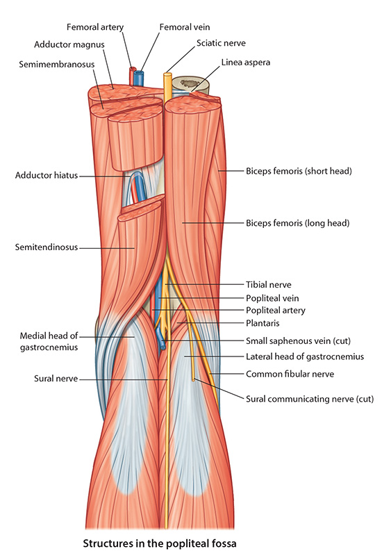

Lab 7 - Module 3 - Popliteal Fossa: Page 2 of 5
×

Popliteal Veins
|  |
| Tap on image to enlarge |
| Add the Posterior Tibial Vein. |
| Add the Small Saphenous Vein which pierces the popliteal fascia and drains into the popliteal vein. Rotate the cadaver to visualize this connection. |